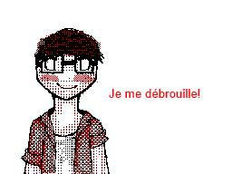
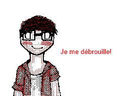

![[ANA JDG] Asterix and the Great Rescue - Megadrive](../vi/6oUXi0ckLmA/default.jpg)
![[ Présentation pour la chaîne Grenier des Joueurs ] JDG Prod](../art/SHAR.6419.583.2.jpg)


Les YouTube Poop, ces vidéos issues de la culture du remix qui se distincte par un montage dépourvus de règles tel l'art dadaïste du début du 20ème siècle.
Si les YouTube Poop sont de l'art à mes yeux par l'émotion et l'interaction particulières qu'elles nous apportent ainsi que les remises en question du droit d'auteur et de l'humour du monteur, on ne peut vraiment parler d'art sans en connaître ses origines et son évolution.
Une origine et une évolution se raconte par une histoire qui commence par le chapitre...
LES ORIGINES
Le 27 novembre 2006 , sur YouTube, sur le compte d'un certain SuperYoshi, née la première vidéo qualifiée de "YouTube Poop". Son nom est "I'D SAY HE'S HOT ON OUR TAIL" et sa source est un épisode du dessin-animé The Adventure of Super Mario Bros. 3 , "Recycled Koopa" .
Ce ne fût pas tout de suite la grande effervescence de YouTube Poop. Il fallut du temps pour que les gens s'approprient se style de montage aléatoire et répétitif sur Windows Movie Maker.
YouTube fera tout ce qui est en son pouvoir pour mettre à terre les premiers poopeurs et les plus originaux survivront à la vague de suppression des premières YTPs. Le robot de YouTube n'étant pas encore suffisamment puissant pour déceler les contenus copyrighté,
Les Poopeurs anglophones ont réussis l'accouchement d'un nouveau type de vidéo qui va sortir du lot de podcast et de vidéos de chat.
2007: Invasion des Francs
Le 7 septembre 2007 arriva Kurisu, sous le pseudo "TBATBT" à l'époque, un jeune avec "[1st French YouTube Poop] Un Festin pour Dîner".
D'après la description de la vidéo, il aurait été inspiré par les poopeurs CloakedDude , Isisgarnet , Shirogitsunelnari , Deepercutt , D2RCR et FlameStormStudios. Des poopeurs qui , déjà, mettait de la mise en scène dans leurs YTPs...
Une des choses qui fût assez visible de la part des premiers poopeurs francophones est la présence de mise en scène, de création de cohérence à partir d'un contenu déjà cohérent. On n'est plus des poopeurs mettant le hasard et la répétition en avant mais des scénaristes.
Remarquons que les premières sources des poopeurs furent essentiellement des dérivés audiovisuels de licence Nintendo (Link CD-i , Zelda CD-i , Super Mario Brothers Show , ...).
2008: ET CELA FAIT BIM BAM BOUM !
En 2008, avec un gain d'intérêt plus grand du public pour YouTube, les blogs et les réseaux sociaux,tels que MySpace, les YouTube Poop commencent à se rendre encore plus visible et plus nombreuse. Les partages et les nouvelles créations n'apportent rien car tout le monde utilisent les mêmes sources ( les CD-i... TOUT LE MONDE !!!) mais le sentence-mixing commence à pointer le bout de sa syllabe par le hasard des répétitions de séquence.
L'explosion de poopeur, la fermentation des techniques et la surcharge de Zelda CD-i vont amener la communauté a se solidifier... tout le monde connait les répliques des personnages par-c½ur que ça en devient les premières mimiques de la communauté.
2009: TU ES UN PIRATE !
En 2009, les Laughelymotions, qui sont les YouTube Poop de Dailymotion, et les YTPs se diversifie de plus en plus en source. On télécharge, on pirate, on capture, on rippe,... on veut de la source ! ON EN A MARRE MON PETIT ! CETTE SOURCE EST PÉRIMÉE !
Du coté des anglophones qui ont aussi fait la transition avec des sources tel que Bob L'éponge, on passe ENFIN à Sony Vegas.
2010-2011: Sony Vegas Pro Invasion
Windows Movie Maker avait beau être gratuit et simple d'utilisation, ses capacités n'étaient pas à la hauteur des envies de booster le sentence-mixing et l'animation des YTPs !
Les anglophones ont eût un an de répit, il est temps que la France améliore ses armes pour la génération des poopeurs-animateurs-fluide !
Les YTPs passent en HD, le sentence-mixing gagne en précision, les animations ne sont plus faîtes image par image en alternant Paint et Windows Movie Maker, on peut enfin faire des mises en scènes avec des bruitages et de la musique de fond,... les YTPs font enfin peau neuves... mais il faudra du temps pour que tout le monde se mettent à ce logiciel qu'est Sony Vegas.
Certains passeront plutôt par Magix Video Deluxe... c'est un peu la même chose mais la précision sonore n'est pas aussi avancée et les effets bien moins nombreux. L'interface reste assez proche de Windows Movie Maker par-contre.
Les YTPs sont donc encore plus accessibles par les internautes et plus faciles à faire pour les poopeurs.
Les vidéos de drama et publicités sont utilisés comme source ce qui augmentent une nouvelle fois l'intérêt des YTPs ... mais aussi des vidéos et de leurs protagonistes comme Morsay , Olivier de Carglass , ...
2012-2014 : QUI A MIT DU BUDGET DANS CETTE MERDE ?!
Malgré la présence de "Poop" dans les termes "YouTube Poop", certains Poopeurs se permettent de réalisé des genres de court-métrages et des Music Videos ( YTPMV ) avec des visuels encore plus propre qu'à l'accoutumé.
Bien sur, on n'a pas attendu cette période pour raconter des histoires et passer des mois sur une YouTube Poop mais là, c'est un niveau inattendu qui a été atteint.
Vers la fin de cette période, After Effect fait son entré et marque un tournant majeure dans le potentiel artistique des YouTube Poop... le visuel est enfin maîtrisé à un niveau professionnel.
2015-2018 : DONNEZ-MOI DES MILLIONS DE VUES À CETTE OEUVRE !
Si certains poopeurs ne peuvent ou ne veulent pas passer à des logiciels plus performant que Sony Vegas ou même Windows Movie Maker, certains se permettent de sortir les effets de 3D, les flammes, les mises en scènes avec traitement colorimétrique pour l'étalonnage et des jeux d'ambiance.
Certains poopeurs atteindront des millions de vues sur leurs YTPs alors que d'autres resteront dans l'ombre de la scène faute de ne pas avoir été trop attractif visuellement et d'avoir été vieux jeu.
La communauté étant toujours unie mais fragile, on a pût avoir les "Morsay Mad Festival" de 2015 à 2017 mettant en avant le summum de la YTPMV, le coté musical des YouTube Poop, et de la MAD, l'équivalent des YTPMV mais avec une origine japonaise à base de cassette audio sur lesquelles ont enregistrait par-dessus et faisait sauter des moments créant des genres de MashUp d'anime japonais. Malheureusement, une bonne partie des poopeurs sont devenus des MotionsDesigner ou des monteurs pour des vidéastes.
Beaucoup des poopeurs qui étaient adolescent lors de leurs premières YouTube Poop sont désormais de jeunes adultes et ont arrêtés les YTPs pour cause de travail ou de désintérêt pour cet art pour en privilégier un autre comme le dessin ou juste faire du gaming et des vidéos de type "shitpost".
2019-... : J'attend...
Depuis la fin de 2018, peu de poopeurs réussissent à faire rêver et découvrir de nouvelles techniques et la communauté semble de plus en plus faible en France.
On a perdu beaucoup de poopeurs talentueux et on a pas réussi à donner envie à des gens talentueux de s'y essayer. En gros, l'offre n'a sût se renouveler et seule un faible nombre de poopeur possèdent un style frais et une maîtrise du genre assez avancée.
C'est la crise en gros.
KidpaddleetcieGlin


![[La Belle et la Bête]Bad Ending!](../5252/79895252/pics/3216487855_1_2_W9Egy4u3.jpg)
![[La Belle et la Bête]Bad Ending!](../5252/79895252/pics/3216487855_1_4_47HMCrb2.jpg)
![Glin à Aglina [BD Simple] (partie 1)](../5252/79895252/pics/3214996877_1_2_w1vPagw4.jpg)
![Glin à Aglina [BD Simple] (partie 1)](../5252/79895252/pics/3214996877_1_4_KMEIiQdq.jpg)
![Glin à Aglina [BD Simple] (partie 1)](../5252/79895252/pics/3214996877_1_10_urhkuwCj.jpg)
![Glin à Aglina [BD Simple] (partie 1)](../5252/79895252/pics/3214996877_1_12_3pbjX9Cz.jpg)
![Glin à Aglina [BD Simple] (partie 1)](../5252/79895252/pics/3214996877_1_14_NPeqKhAr.jpg)
![Glin à Aglina [BD Simple] (partie 2)](../5252/79895252/pics/3214997027_1_6_7mLNkjoC.jpg)
![Glin à Aglina [BD Simple] (partie 2)](../5252/79895252/pics/3214997027_1_10_mfJwSFSp.jpg)
![Glin à Aglina [BD Simple] (partie 2)](../5252/79895252/pics/3214997027_1_12_U8RSYdIi.jpg)
![Glin à Aglina [BD Simple] (partie 2)](../5252/79895252/pics/3214997027_1_14_lW6CkhOB.jpg)
![Glin à Aglina [BD Simple] (partie 2)](../5252/79895252/pics/3214997027_1_16_ID3zIegF.jpg)
![Glin à Aglina [BD Simple] (partie 3)](../5252/79895252/pics/3214997275_1_2_0d5egmUr.jpg)
![Glin à Aglina [BD Simple] (partie 3)](../5252/79895252/pics/3214997275_1_4_7q8oFi2B.jpg)
![Glin à Aglina [BD Simple] (partie 3)](../5252/79895252/pics/3214997275_1_6_EjdkN2tD.jpg) 
![Glin à Aglina [BD Simple] (partie 3)](../5252/79895252/pics/3214997275_1_10_pqaRLl3r.jpg)
![Glin à Aglina [BD Simple] (partie 3)](../5252/79895252/pics/3214997275_1_12_kif4l4mY.jpg)
Partage